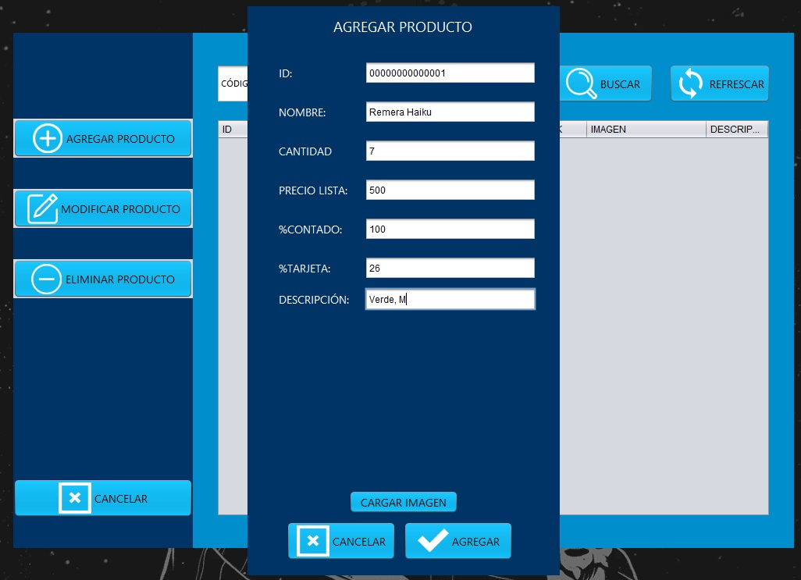
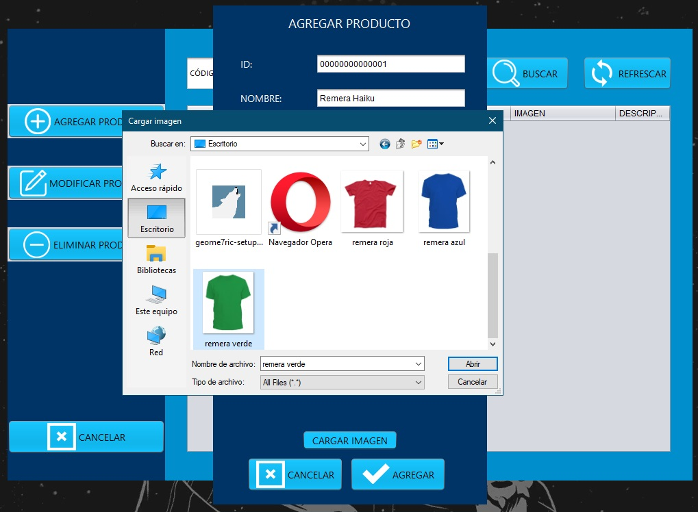
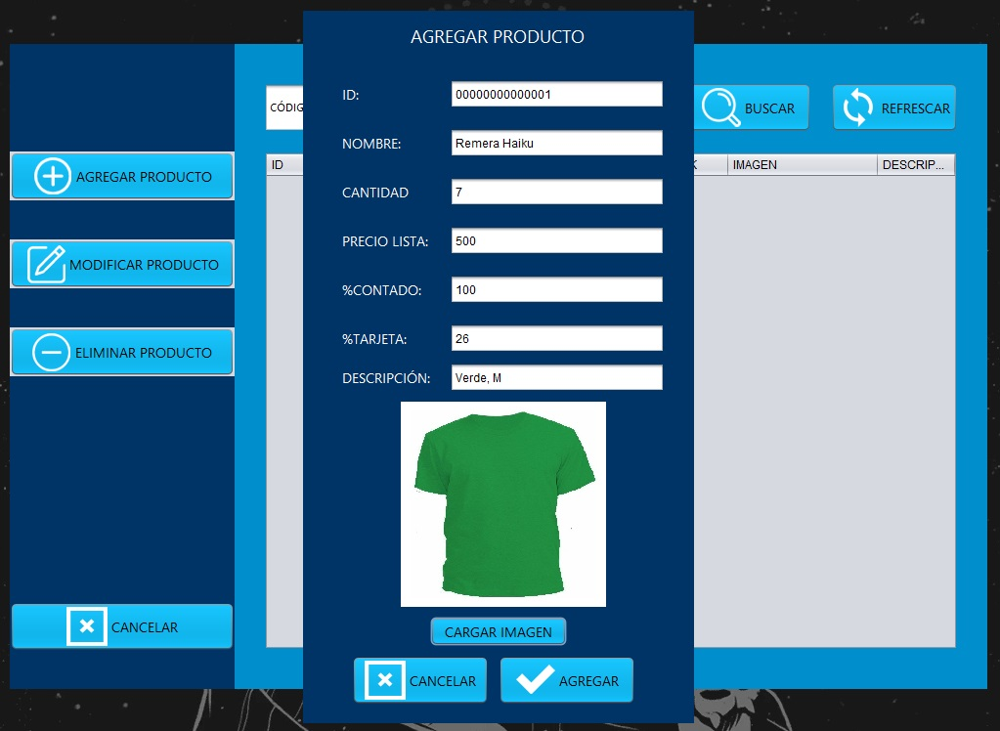
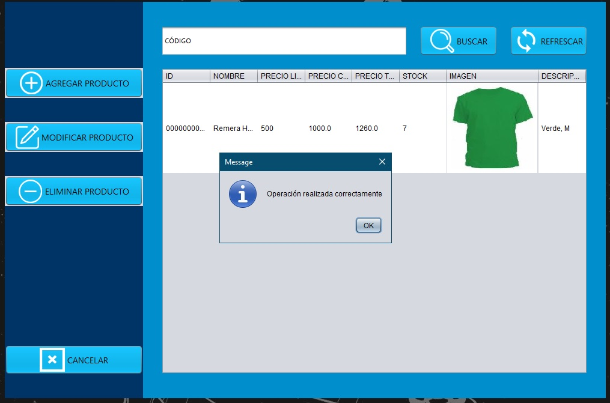
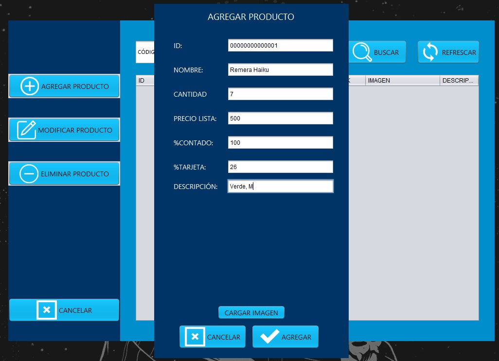
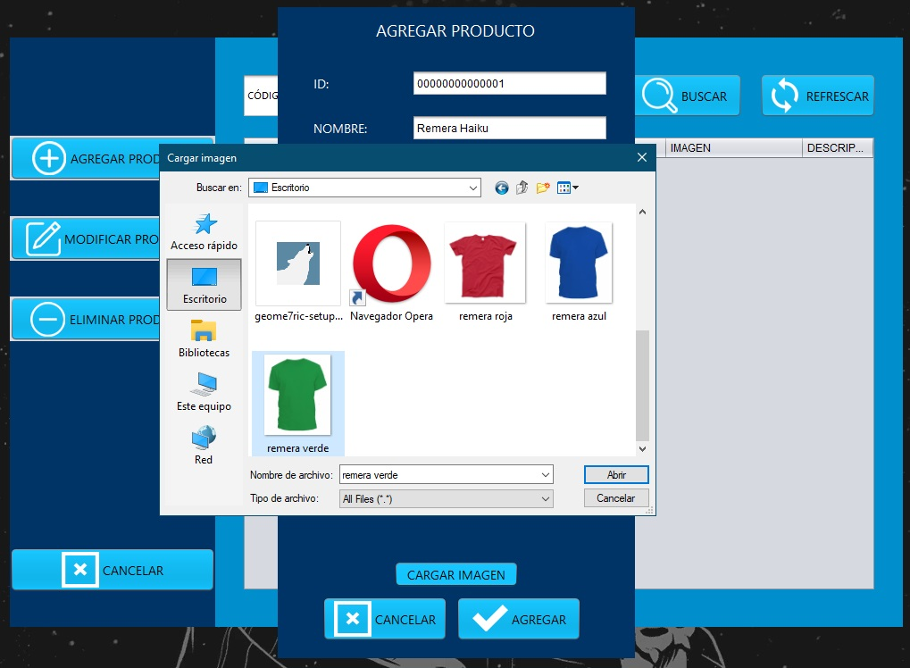
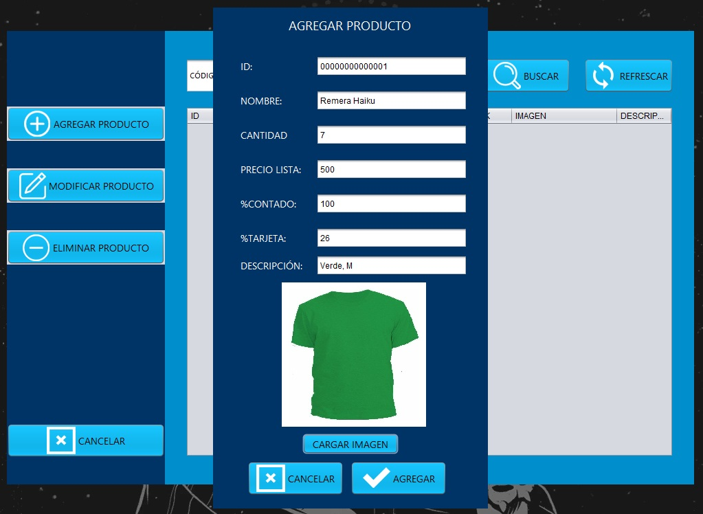
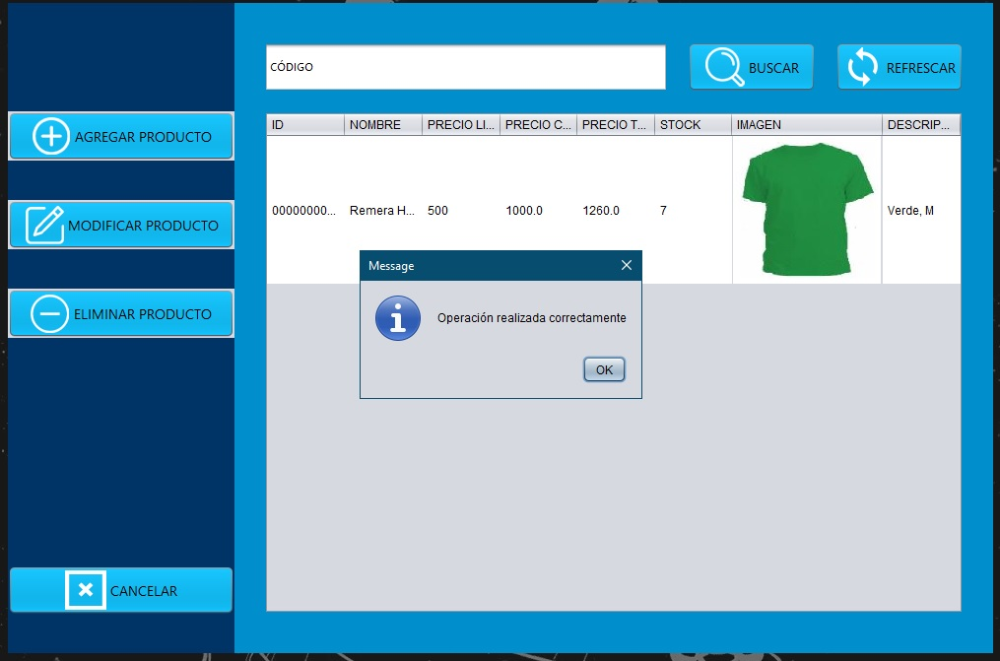
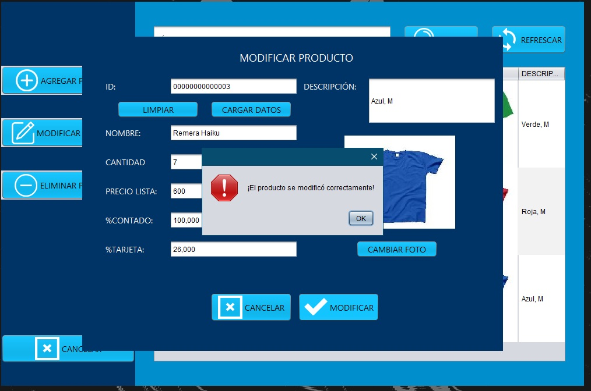
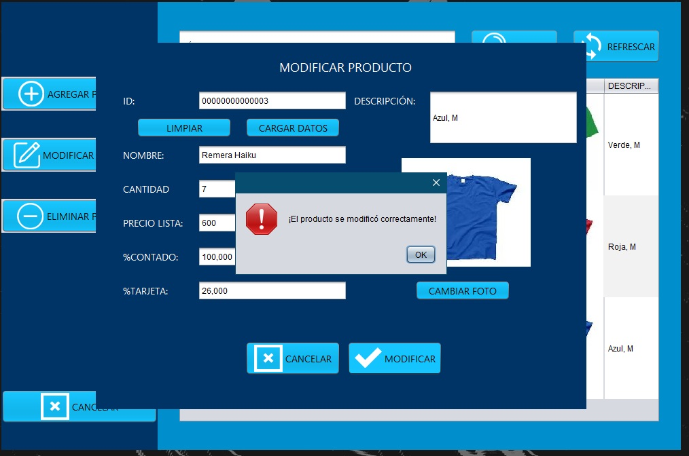

Escaneo de retina
Método de autenticación biométrica
· Introducción
La retina es la parte neural del ojo responsable de la visión. El patrón de los vasos sanguíneos que sirven a la retina es tan único como una huella digital. La tecnología que escanea la retina se conoce como escaneo retinal. El verdadero objetivo de la exploración es el patrón capilar en la retina. El proceso se basa en generar imágenes de la retina usando una fuente de luz de baja intensidad. No hay que confundirlo con el escaneo del iris.
· Inicios
La singularidad del patrón vascular de la retina fue introducida por dos oftalmólogos, el Dr. Carleton Simon y el Dr. Isodore Goldstein en 1935. Más adelante en 1950, el Dr. Paul Tower descubrió que incluso entre gemelos idénticos los patrones vasculares son únicos. Pero la tecnología utilizada para explotar esta información se desarrolló más tarde. Aunque el uso militar y de alta seguridad de las exploraciones fotográficas de la retina comenzó décadas antes, para 1985, la tecnología de exploración de la retina se puso a disposición para la identificación biométrica computarizada y el uso comercial de seguridad.
· Procedimientos
Los escáneres de retina se basan en la presencia de la fina red de capilares que suministran a la retina oxígeno y nutrientes. Estos vasos absorben la luz y pueden ser fácilmente visualizados con la iluminación adecuada. Los escaneos de retina requieren un contacto cercano entre el usuario y el escáner, una alineación perfecta del ojo con el escáner y ningún movimiento del ojo. El examinador debe mantener el ojo del sujeto a menos de media pulgada del instrumento. El sujeto debe enfocar un punto de luz verde pequeño (para alinear correctamente el ojo) y evitar el parpadeo. A continuación, se transmite una luz coherente de baja intensidad a través del ojo y la imagen reflejada del patrón capilar de la retina es registrada por la computadora. Los patrones retinianos pueden cambiar en caso de diabetes, glaucoma, trastornos degenerativos de la retina o cataratas. Por lo tanto, aunque los escáneres de retina tienen una precisión de casi el 100%, no pueden utilizarse como medida de seguridad universal sin tener en cuenta los cambios normales. Un escaneo inicial (inscripción) toma un mínimo de cinco escaneos y dura aproximadamente 45 segundos; los escaneos de autentificación subsiguientes son más rápidos y toman sólo 10-15 segundos.
· Métodos de autenticación
Un sistema de autenticación de la retina tiene básicamente tres pasos principales: adquisición de imágenes, extracción de características y coincidencia de características. La primera etapa de un sistema de autenticación de la retina es la adquisición de imágenes. Como mencionamos anteriormente, para capturar la imagen de la retina se utiliza una cámara de fondo, en la que el usuario debe colocar su ojo muy cerca del cristalino y también debe permanecer perfectamente quieto en este punto. Además, si la persona lleva gafas, éstas deben quitarse para evitar interferencias en la señal. La segunda etapa es la extracción de las características. Se extraen diferentes características de la estructura de los vasos sanguíneos de la imagen de la retina, y/o de la propia imagen de la retina. Estas características son únicas para cada individuo y se almacenan como un patrón de referencia.Los procedimientos de autenticación basados en la retina pueden clasificarse a grandes rasgos en dos categorías diferentes. Pocos algoritmos dependen de las características vasculares de las imágenes de la retina. Estos procesos requieren la segmentación de los vasos sanguíneos, lo que lleva mucho tiempo. Por lo tanto, el tiempo de cálculo de estos métodos es alto. A continuación, se enumeran las diferentes características de los vasos sanguíneos:
Un sistema de autenticación de la retina tiene básicamente tres pasos principales: adquisición de imágenes, extracción de características y coincidencia de características. La primera etapa de un sistema de autenticación de la retina es la adquisición de imágenes. Como mencionamos anteriormente, para capturar la imagen de la retina se utiliza una cámara de fondo, en la que el usuario debe colocar su ojo muy cerca del cristalino y también debe permanecer perfectamente quieto en este punto. Además, si la persona lleva gafas, éstas deben quitarse para evitar interferencias en la señal. La segunda etapa es la extracción de las características. Se extraen diferentes características de la estructura de los vasos sanguíneos de la imagen de la retina, y/o de la propia imagen de la retina. Estas características son únicas para cada individuo y se almacenan como un patrón de referencia.
Los procedimientos de autenticación basados en la retina pueden clasificarse a grandes rasgos en dos categorías diferentes. Pocos algoritmos dependen de las características vasculares de las imágenes de la retina. Estos procesos requieren la segmentación de los vasos sanguíneos, lo que lleva mucho tiempo. Por lo tanto, el tiempo de cálculo de estos métodos es alto. A continuación, se enumeran las diferentes características de los vasos sanguíneos:
• Punto de ramificación: la estructura vascular de la imagen de la retina tiene forma de árbol. Por lo tanto, las principales características del patrón de los vasos sanguíneos son el punto de ramificación donde un vaso se bifurcó en dos ramas de vasos.
• Punto final: los puntos finales de los patrones de los vasos sanguíneos, donde termina cada vaso, se consideran como otra característica para el sistema de autenticación basado en la retina.
• Punto de cruce: los puntos de intersección entre dos vasos sanguíneos se denominan puntos de cruce y se consideran como otro conjunto de características.
• Vasos sanguíneos en y alrededor del disco óptico: los patrones de los vasos sanguíneos alrededor de la región del disco óptico también se consideran un conjunto de características debido a su estabilidad y a la variación única dentro de esa región para una persona en particular.
Sin embargo, algunos otros algoritmos se basan en características no vasculares extraídas de imágenes de la retina. Son características estructurales de la imagen de la retina como la luminancia, el contraste y la estructura. Algún algoritmo calculó el puntaje de disimilitud del borde de la retina para la autenticación. Mientras que otros usaron la transformación de Fourier de la imagen de la retina para extraer el rasgo de fase de espectro de Fourier (FSPF). Los bordes de la imagen de la retina también se consideran como una de las características. El tiempo de implementación de estos métodos es bajo, ya que este algoritmo no requiere la segmentación de los vasos sanguíneos para la extracción de la característica.
· Escáneres
La tecnología de los escáneres de retina ha cambiado en los últimos años. Los grandes dispositivos iniciales están siendo reemplazados por instrumentos más pequeños y precisos. El primer escáner de retina comercial fue desarrollado por EyeDentify en 1984 con el lanzamiento de la unidad de identificación personal Eyedentification 7.5. Uno de los desarrollos más recientes en el área es un pequeño escáner de retina móvil y fácil de usar desarrollado por Retinal Technologies de Boston. Aunque inicialmente se desarrolló con fines de diagnóstico, también estará disponible como herramienta de seguridad.Engañar al escáner de retina es muy difícil, ya que requieren retinas intactas para completar el escaneo. Después de la muerte, la retina se degrada muy rápidamente y por lo tanto no puede ser utilizada en la mayoría de los casos para una identificación post-mortem precisa.
Aunque a menudo es un efecto especial popular en las películas, el uso de una retina desprendida de un cadáver no pasaría desapercibido por el equipo de escaneo moderno. Asimismo, la alteración quirúrgica del patrón retiniano no sólo sería un proceso peligroso y sumamente costoso, sino que los cambios introducidos serían fácilmente detectados por el equipo de escaneo moderno.
· Cómo funciona
Un escáner de retina usa luz infrarroja para hacer mapas. Cuando una persona mira por el ocular, un haz invisible de luz infrarroja de baja energía traza un camino circular en la retina en la parte posterior del ojo. Los capilares llenos de sangre absorben más luz infrarroja que el tejido circundante. Debido a esto, hay una variación en la intensidad del reflejo. El escáner mide este reflejo en 320 puntos a lo largo de la trayectoria del rayo. Luego asigna un grado de intensidad entre cero y 4.095. Los números resultantes se comprimen en un código de computadora de 80 bytes. Este código puede ser comparado con los patrones que ya han sido introducidos en la base de datos de la computadora.

1. Productos
En primer lugar, nos centraremos en esta vista, la cuál sin ningun producto cargado aún, luce de la siguiente manera.
1.1 Agregar producto
El programa está pensado para productos con códigos de barra1 para poder establecer numéros únicos e identificatorios para cada uno y poder obtenerlos con una lectora de código de barras. En la secuencia de imagenes, agregaremos como ejemplo, una remera verde marca Haiku talle M.1.- Si tus productos no tienen códigos de barra, ¡no te preocupes!, existen impresoras específicas y muy prácticas que se encargan de proveer peganitas de códigos de barra para tus productos
 







1.2 Modificar producto
El procedimiento consta de seleccionar el producto a modificar, clickear en el botón 'Modificar producto' y editar los campos que necesitamos ante cambios de precios, porcentajes, errores de tipeo a la hora de cargar el producto, etc. Para el ejemplo, vamos a cambiar el valor de la remera azul de $500 a $600.

 


1.2 Eliminar producto
Si ya no tiene determinados productos y sabe que no los trabajarás más, basta con seleccionar el producto a eliminar y clickear en el botón 'Eliminar producto' para quitarlo de tu sistema. En el ejemplo, eliminamos la remera azul.

Por último, la barra y su botón para buscar dentro de tus productos, ya sea por código o nombre.
2. Vender
Continuamos con la vista 'Vender',la cuál es la que corresponde abrir a la hora de estar en el local y vender uno de nuestros productos. Es un carro de compra en lo que se debe incluir todo producto qe un cliente va a comprar. En el ejemplo, venderemos una remera verde y una remera roja. El cliente pagará con tarjeta de crédito.

3. Clientes
Por otro lado tenemos la vista 'Clientes', en donde podremos observar la información de los clientes que anteriormente agregamos a nuestro sistema.
3.1 Agregar cliente
Para el ejemplo, voy a ingresarme como cliente con una fecha de notificación para el 15 de abril con la nota 'recordarle que ingresaron jeans', suponiendo que sabemos que el 15 de abril, nos llegarán los nuevos jeans de la temporada y yo solicité ser avisado. De esta manera, el 15 de abril el programa nos lo recordará.
3.2 Modificar cliente
Supongamos que ya notificamos a Matias sobre el ingreso de los jeans, quitaremos la fecha de notificación y la anotación.


3.3 Eliminar cliente y buscar
Funcionan de la misma manera que en Productos sólo que el buscar sólo funciona por nombres.
4. Cerrar caja
En este apartado se puede ver un detalle y un total sobre los ingresos del día.
5. Avisos
En esta ventana, veremos las notificaciones del día. Si en el día de hoy hay avisos, se nos habilitará el boton 'Avisos'. Suponiendo que hoy es 15 de abril, al abrir el programa veremos la notificación de avisos y podremos ver qué tenemos que recordarle a Matias.
6. Proveedores
Tiene las mismas funcionalidades que los clientes, sólo que sin fechas de notificación. En el ejemplo, cargamos al proveedor 'El Don' con datos inventados.
Para poder usar el programa se puede comprar una copia del programa o contratar el servicio pagando un abono mensual. Además, disponemos de una versión gratuita de prueba . Para conocer las tarifas u obtener la versión de prueba, mis datos de contacto están aquí abajo o bien podés clickear o tocar en el icono de WhatsApp flotante que ves abajo a la derecha.